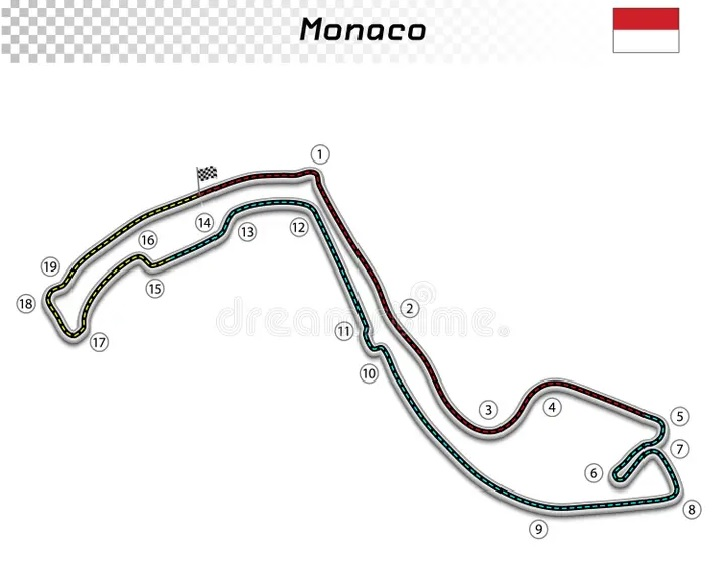

Introducción
Ha albergado el Gran Premio de Mónaco desde 1929. Es la carrera más glamorosa, prestigiosa, y una de las tres joyas de la "Triple Corona". El trazado ha cambiado muy poco a lo largo de las décadas, manteniendo su esencia histórica.
Notas Clave de la Pista
Es el circuito más lento y estrecho del calendario. Los equipos deben usar máxima carga aerodinámica y la clave es la precisión del piloto, ya que los muros están muy cerca y no perdonan errores.
Tipo de Pista
Es un Circuito urbano/callejero. Se monta temporalmente en las calles de Montecarlo. El trazado es bacheado, con la velocidad media más baja y las velocidades punta más bajas de toda la temporada de F1.
⬅ Volver a Circuitos